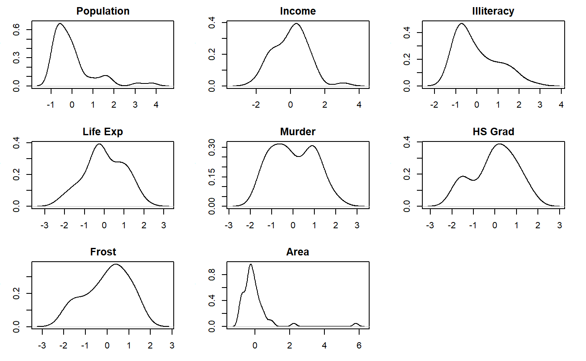
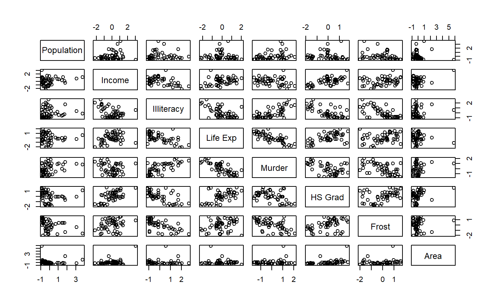
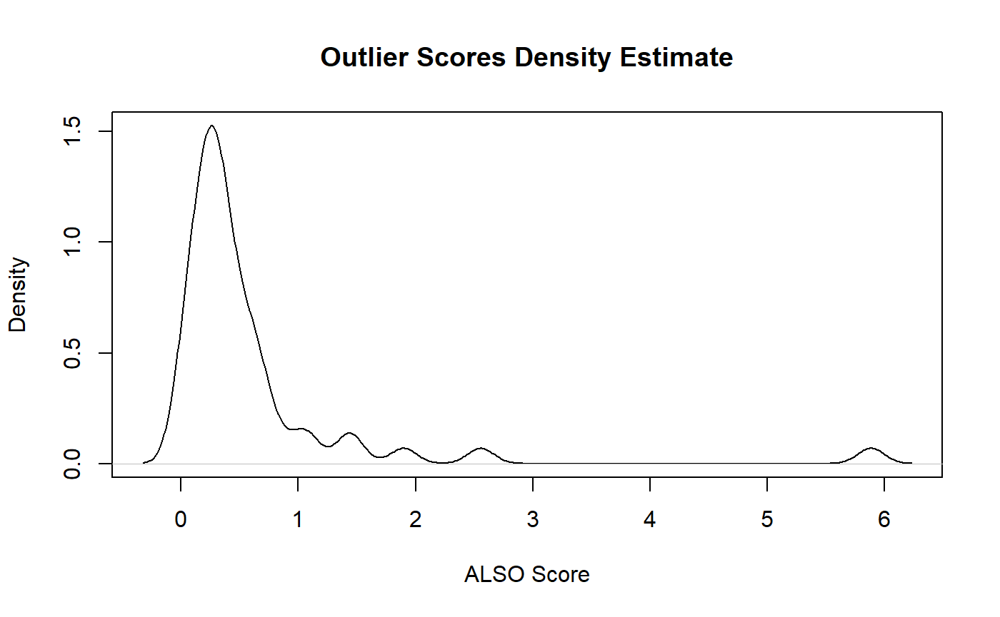

ALSO_RF.RmdAttirubte-wise Learning for Scoring Outliers (ALSO) is an outlier detection technique for standard multidimensional datasets. For each feature in the dataset, a predictive model is constructed in which the reference feature is the target and the remaining features are predictors. When a feature is generally predictable with good accuracy, observations deviating significantly from predicted values may be outliers. Observations with significant deviations across many predictable features may be strong outliers.
This document will illustrate the use of the ALSO package. It was created for the sole purpose of making the ALSO technique easily available to R users. The package currently contains a single function, ALSO_RF().
library(ALSO) # devtools::install_github("dannymorris/ALSO")
library(dplyr)
library(corrplot)
library(plotly)
sessionInfo()## R version 3.4.2 (2017-09-28)
## Platform: x86_64-w64-mingw32/x64 (64-bit)
## Running under: Windows 10 x64 (build 17134)
##
## Matrix products: default
##
## locale:
## [1] LC_COLLATE=English_United States.1252
## [2] LC_CTYPE=English_United States.1252
## [3] LC_MONETARY=English_United States.1252
## [4] LC_NUMERIC=C
## [5] LC_TIME=English_United States.1252
##
## attached base packages:
## [1] stats graphics grDevices utils datasets methods base
##
## other attached packages:
## [1] plotly_4.7.1 ggplot2_2.2.1 corrplot_0.84 dplyr_0.7.6 ALSO_0.1.0
##
## loaded via a namespace (and not attached):
## [1] Rcpp_0.12.17 plyr_1.8.4 compiler_3.4.2
## [4] pillar_1.2.1 bindr_0.1.1 tools_3.4.2
## [7] digest_0.6.12 viridisLite_0.3.0 jsonlite_1.5
## [10] evaluate_0.10.1 memoise_1.1.0 tibble_1.4.2
## [13] gtable_0.2.0 pkgconfig_2.0.1 rlang_0.2.0
## [16] rstudioapi_0.7 commonmark_1.5 yaml_2.1.14
## [19] pkgdown_1.1.0 bindrcpp_0.2.2 httr_1.3.1
## [22] stringr_1.3.0 roxygen2_6.0.1 xml2_1.2.0
## [25] knitr_1.19 htmlwidgets_0.9 desc_1.2.0
## [28] fs_1.2.3 rprojroot_1.2 grid_3.4.2
## [31] tidyselect_0.2.4 data.table_1.11.4 glue_1.2.0
## [34] R6_2.2.2 rmarkdown_1.8 tidyr_0.8.1
## [37] purrr_0.2.5 magrittr_1.5 backports_1.1.1
## [40] scales_0.5.0 htmltools_0.3.6 MASS_7.3-47
## [43] assertthat_0.2.0 colorspace_1.3-2 stringi_1.1.7
## [46] lazyeval_0.2.0 munsell_0.4.3 crayon_1.3.4states <- state.x77 %>% as_tibble()
states## # A tibble: 50 x 8
## Population Income Illiteracy `Life Exp` Murder `HS Grad` Frost Area
## <dbl> <dbl> <dbl> <dbl> <dbl> <dbl> <dbl> <dbl>
## 1 3615. 3624. 2.10 69.0 15.1 41.3 20. 50708.
## 2 365. 6315. 1.50 69.3 11.3 66.7 152. 566432.
## 3 2212. 4530. 1.80 70.6 7.80 58.1 15. 113417.
## 4 2110. 3378. 1.90 70.7 10.1 39.9 65. 51945.
## 5 21198. 5114. 1.10 71.7 10.3 62.6 20. 156361.
## 6 2541. 4884. 0.700 72.1 6.80 63.9 166. 103766.
## 7 3100. 5348. 1.10 72.5 3.10 56.0 139. 4862.
## 8 579. 4809. 0.900 70.1 6.20 54.6 103. 1982.
## 9 8277. 4815. 1.30 70.7 10.7 52.6 11. 54090.
## 10 4931. 4091. 2.00 68.5 13.9 40.6 60. 58073.
## # ... with 40 more rowsThis dataset is relatively small at 50 rows and 8 variables. Later on we’ll explore a higher dimenional dataset and observe the results.
It is customary to standardize numeric variables prior to predictive modeling in order to eliminate the effects of differences in original measurement scales. Let’s apply the common z-standardization technique.
states_scaled <- states %>%
mutate_all(funs(scale))par(mfrow = c(3,3),
mar = c(3,3,2,2))
for (i in seq_along(states_scaled)) {
pull(states_scaled[, i]) %>%
density() %>%
plot(main = colnames(states_scaled[, i]),
xlab = "")
}
Population, Income, and Area show potential outliers in the right-side tails.
pairs(states_scaled)
cor(states_scaled) %>% round(., 2)## Population Income Illiteracy Life Exp Murder HS Grad Frost
## Population 1.00 0.21 0.11 -0.07 0.34 -0.10 -0.33
## Income 0.21 1.00 -0.44 0.34 -0.23 0.62 0.23
## Illiteracy 0.11 -0.44 1.00 -0.59 0.70 -0.66 -0.67
## Life Exp -0.07 0.34 -0.59 1.00 -0.78 0.58 0.26
## Murder 0.34 -0.23 0.70 -0.78 1.00 -0.49 -0.54
## HS Grad -0.10 0.62 -0.66 0.58 -0.49 1.00 0.37
## Frost -0.33 0.23 -0.67 0.26 -0.54 0.37 1.00
## Area 0.02 0.36 0.08 -0.11 0.23 0.33 0.06
## Area
## Population 0.02
## Income 0.36
## Illiteracy 0.08
## Life Exp -0.11
## Murder 0.23
## HS Grad 0.33
## Frost 0.06
## Area 1.00The correlation plot and matrix show quite a few moderate to strong correlations in both positive and negative directions.
A random forest works quite nicely in the context of ALSO for a few reasons:
rf_also <- ALSO_RF(data = states_scaled, cross_validate = FALSE,
scores_only = FALSE)
rf_also_cv <- ALSO_RF(data = states_scaled, cross_validate = TRUE,
scores_only = FALSE)Note that cross validation scoring (ensures that each point receives an out of sample score) is significantly more computationally intensive than the in-sample scoring.
microbenchmark::microbenchmark(
ALSO_RF(data = states_scaled, cross_validate = FALSE),
ALSO_RF(data = states_scaled, cross_validate = TRUE)
)
# Unit: milliseconds
# expr
# ALSO_RF(data = states_scaled, cross_validate = FALSE, scores_only = F)
# ALSO_RF(data = states_scaled, cross_validate = TRUE, scores_only = F)
# min lq mean median uq max neval
# 421.8709 451.9757 482.1679 466.6313 481.8332 828.7061 100
# 2013.3989 2081.6085 2178.1072 2121.9938 2202.0590 2789.7553 100Cross validation scoring takes rougly 4.5 times longer.
plot(density(rf_also$scores), main = "Outlier Scores Density Estimate",
xlab = "ALSO Score")
Present of outliers reflected in the severe right skewness of the distribution of outlier scores.
Squared prediction errors for all n points across all k feature models.
rf_also$squared_prediction_errors## # A tibble: 50 x 8
## Population Income Illiteracy `Life Exp` Murder `HS Grad` Frost
## <dbl> <dbl> <dbl> <dbl> <dbl> <dbl> <dbl>
## 1 0.0174 0.00423 0.00502 0.0225 0.209 0.0000320 0.107
## 2 1.25 1.70 0.126 0.0762 0.139 0.442 0.149
## 3 0.109 0.0104 0.272 0.0147 0.0426 0.0635 0.399
## 4 0.113 0.155 0.00189 0.174 0.000648 0.212 0.00301
## 5 3.14 0.140 0.0530 0.107 0.223 0.129 0.429
## 6 0.0000569 0.0784 0.000277 0.128 0.0715 0.105 0.646
## 7 0.0267 0.326 0.0251 0.0614 0.0292 0.00000252 0.0646
## 8 0.220 0.00873 0.0324 0.295 0.00407 0.00236 0.119
## 9 0.0520 0.0000407 0.0132 0.00112 0.0138 0.0000270 0.566
## 10 0.00209 0.106 0.0110 0.159 0.0576 0.0712 0.0301
## # ... with 40 more rows, and 1 more variable: Area <dbl>The squared prediction error matrix is multiplied by the feature weights to produce the total outlier score.
Principal components analysis (PCA) is an effective technique for visualizing multidimensional data in fewer dimensions.
pca_states <- princomp(states_scaled)
summary(pca_states)## Importance of components:
## Comp.1 Comp.2 Comp.3 Comp.4 Comp.5
## Standard deviation 1.8780090 1.2646268 1.0438881 0.83267888 0.61396161
## Proportion of Variance 0.4498619 0.2039899 0.1389926 0.08843803 0.04808021
## Cumulative Proportion 0.4498619 0.6538519 0.7928445 0.88128252 0.92936273
## Comp.6 Comp.7 Comp.8
## Standard deviation 0.54891933 0.3762443 0.33305246
## Proportion of Variance 0.03843271 0.0180561 0.01414846
## Cumulative Proportion 0.96779544 0.9858515 1.00000000It appears that the top 3 principal components explain nearly 80% of the variation in the original dataset. Let’s inspect a 3-D scatterplot for potential outliers.
pca_states$scores %>%
as_tibble() %>%
mutate(outlier_scores = rf_also$scores) %>%
plotly::plot_ly(x = ~Comp.1, y = ~Comp.2, z = ~Comp.3,
color = ~outlier_scores, type = "scatter3d")Currently the ALSO_RF() function is not efficient for medium to large data sets. This is especially true for wider data sets with many features. The function was recently tested on a 30,000 x 30 dataset and required approximately 30 seconds to compute on a Delll i9 with 8GB of RAM without cross validation scoring.